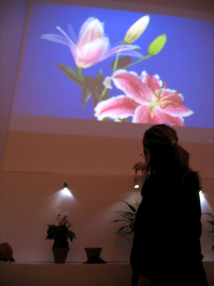
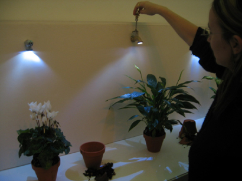

2004 Dec, Interactive Installation
Detailed Picture
 
Documentation
Change is a video and sound installation located in the space of a small room. There are three water faucets that connect with a control switch. When people turn on the water faucet's handle, a strobe of light would light instead of water. To turn on the faucet triggers all lights in the small room to each living plant. People also hear a voice with words such as 'I love you', 'I take care of you' and 'I look after you'. When people turn off the water faucet, they hear the tough gravelly noise. Beneath each water faucet, a plant is located. There are seven plants in a row. Only rooted plants that have the light from the water faucet are growing and becoming strong plants. Other cut plants are put in pots are broken. When people turn on the water faucets, they can look at the video about growing and living plants in the projected it. If people turn off water faucets, they can see the death and entropy about plants. The person who is changing water faucet's handle is difficult to see that movie. The movie too high. It means even we don't know what changes in our surroundings, but definitely our action affects our surroundings like a butterfly effect.
Through my piece, I am trying to say that if we care a little more about our surroundings, we can make a difference. Change is to make people aware of the value that we all share in our surroundings. The piece is supposed to have a fairy tale and mystic feeling to it. I want to restate the obvious about the fundamentals of our lives that we tend to miss.